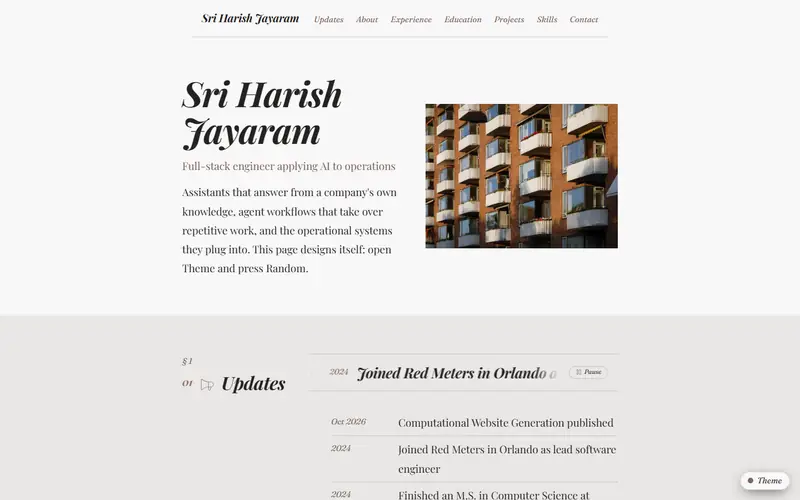
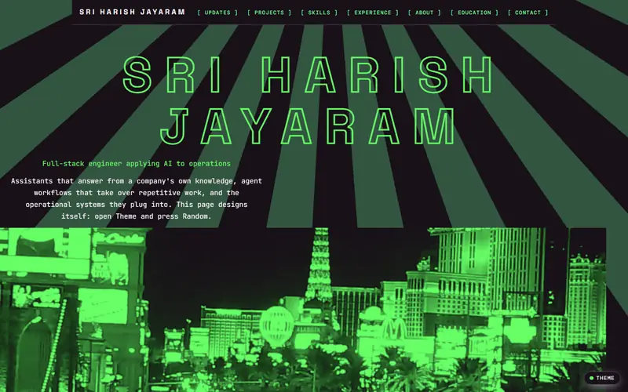
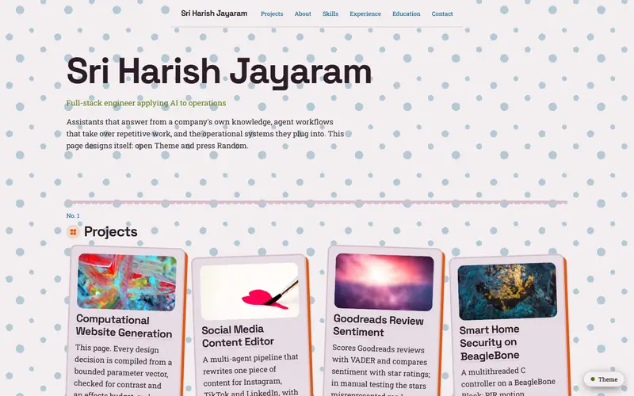

Applied AI in operations
A retrieval-augmented assistant built on Amazon Bedrock, LangChain and vector search that answers technical questions from internal documentation, and a CrewAI agent workflow, both in production use.
I'm a full-stack engineer leading software at Red Meters. I build retrieval-augmented assistants that answer from a company's own knowledge, agent workflows that take over repetitive work, and the operations software they plug into, each taken from prototype to production use.



TypeScript, Next.js, React, Zod, Vitest, GitHub Actions
Everything stays inside: my devices and my own iCloud Drive
{ "ts": "2026-11-09T09:25:30-05:00",
"device": "laptop",
"event": "span",
"app": "msedge.exe",
"domain": "github.com",
"duration_s": 240 }The schema allows no other fields, so a collector can't quietly start logging something new, like a full address, without the format changing first.
Moving an app between categories is one line in a settings file I keep with my logs, and every past day regroups the next time the report runs.
| Time | Kind | Left | For | On | Away | Came back to |
|---|
The same rows go into a CSV that I open in a spreadsheet of my own.
One file per device per day, one line per event. Every time carries its UTC offset, so the phone and laptop line up exactly.
Logged only as Private, with no name, title or domain.
Python, SQLite, Win32, JavaScript (Manifest V3), iOS Shortcuts, Scriptable, iCloud Drive, JSON Schema, pytest
Open the full write-up Design notes on GitHub
The source stays private, like the data it records.
Python, CrewAI, LangChain, Gemini, Streamlit
Python, VADER, DistilBERT, SQLite, pytest
C, POSIX threads, BeagleBone Black, Linux GPIO
A retrieval-augmented assistant built on Amazon Bedrock, LangChain and vector search that answers technical questions from internal documentation, and a CrewAI agent workflow, both in production use.
Event-driven workflows across business systems in n8n, Google Apps Script and HubSpot Workflows, replacing manual hand-offs between teams.
One system of record for estimates, inventory, procurement, bill of materials, production and customer success, synced both ways with HubSpot and QuickBooks Online.
Writing the policies, training the people who use these systems, and following each rollout until it is actually used.
Edge to cloud: Modbus RTU/TCP acquisition with ZeroMQ and Redis on the device, MQTT into AWS IoT Core, Timestream for time series, Cognito and IAM for identity.
Full-stack product: React front ends for an on-device operator console and a customer web app, with Node.js, Flask and FastAPI services behind them.
2024 to now
Lead software engineer across full stack, AI automation and IoT, in Orlando, Florida. I own the stack end to end, from the operations platform and web apps to the cloud and on-device services behind the company's RedMeter instruments.
2022 to 2024
GPA 3.87/4.0 and the Outstanding Academic Achievement Award. Coursework included real-time and embedded systems on a BeagleBone Black.
2021 to 2022
Spring Boot REST services and Angular UI for a production insurance-claims platform; sprint lead for two sprints, and the Sapphire Award for delivery and documentation.
2017 to 2021
GPA 8.52/10, in Chennai, India.
Publication
Have a workflow that should run itself, or a system that should answer for itself?
LinkedIn is the fastest way to reach me.